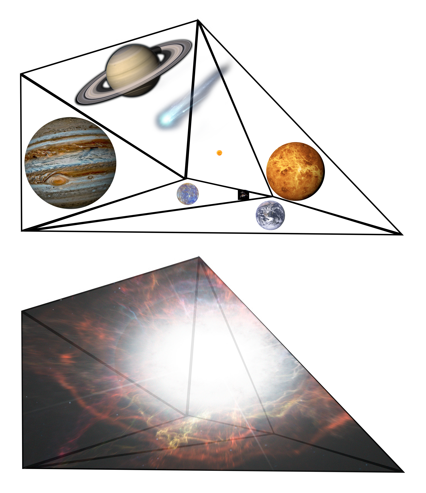
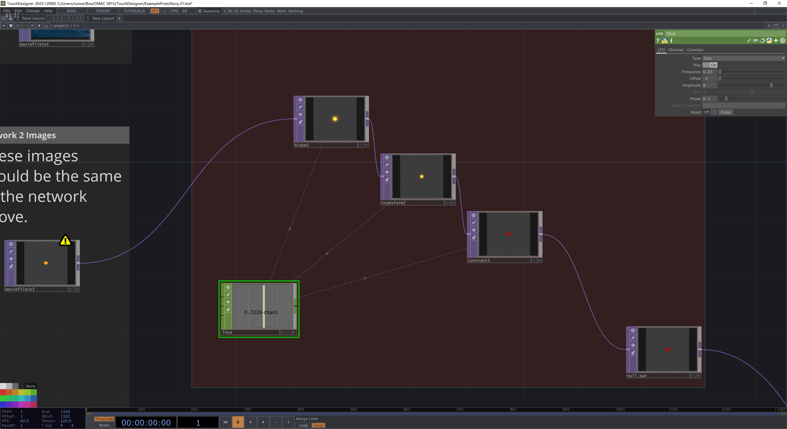
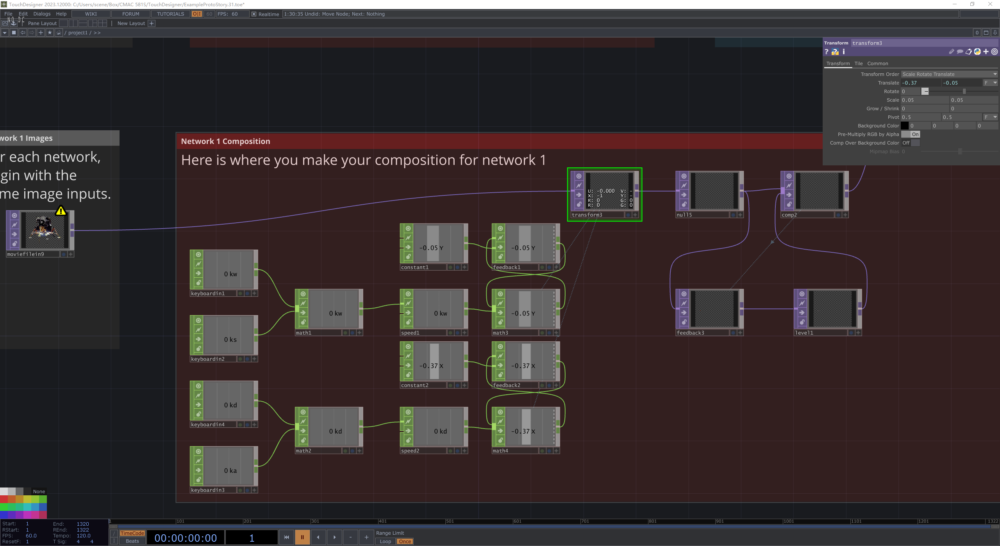

Project | 2024
宇宙投影叙事原型
Cosmic Projection Narrative Prototype
一个基于 TouchDesigner 的太空主题视觉叙事实验，围绕故事板、投影形状和节点网络，把行星、彗星、超新星与航天器素材组织成一段可展示的动态序列。
A TouchDesigner-based space narrative experiment that turns storyboards, projection shapes, and node networks into a presentable animated sequence built from planets, comets, supernovae, and spacecraft imagery.
Overview | 项目简介
这个项目使用 TouchDesigner 搭建一个宇宙主题的视觉叙事原型。项目过程以故事板、投影模板、多轮 TouchDesigner 工程迭代和最终导出视频，记录了从概念组织、镜头顺序到输出演示的完整流程。
This project uses TouchDesigner to build a space-themed visual storytelling prototype. Storyboards, a projection template, multiple TouchDesigner project iterations, and the final exported video document a complete process from concept organization and shot sequencing to presentation output.
页面中使用的素材覆盖行星、背景宇宙图像、彗星、超新星、航天器和节点网络截图，说明这个项目重点不只是视觉风格，也在测试如何将二维图像资源、合成逻辑和投影映射结合成一段连贯的空间叙事。
The asset set spans planets, space backgrounds, comets, supernovae, spacecraft imagery, and node screenshots, which suggests that the project is not only about style but also about assembling 2D assets, compositing logic, and projection mapping into a coherent spatial sequence.
Process | 过程
项目工作流先以故事板和投影形状模板确定叙事节奏与画面结构，再在 TouchDesigner 中反复试验图像编排、节点连接和视觉效果，最后输出为 final.mp4 进行展示。
The workflow first establishes narrative timing and image structure through storyboards and a projection-shape template, then iterates on image sequencing, node connections, and visual effects in TouchDesigner before exporting final.mp4 for presentation.
多轮工程版本留下了清晰的探索轨迹。对作品集页面而言，这类过程证据说明作品不仅有最终画面，也包含方法、结构和测试。
Multiple project iterations leave a clear record of exploration. For a portfolio page, that process evidence shows not only a final image, but also the methods, structure, and testing behind it.
Media | 图像与成果



